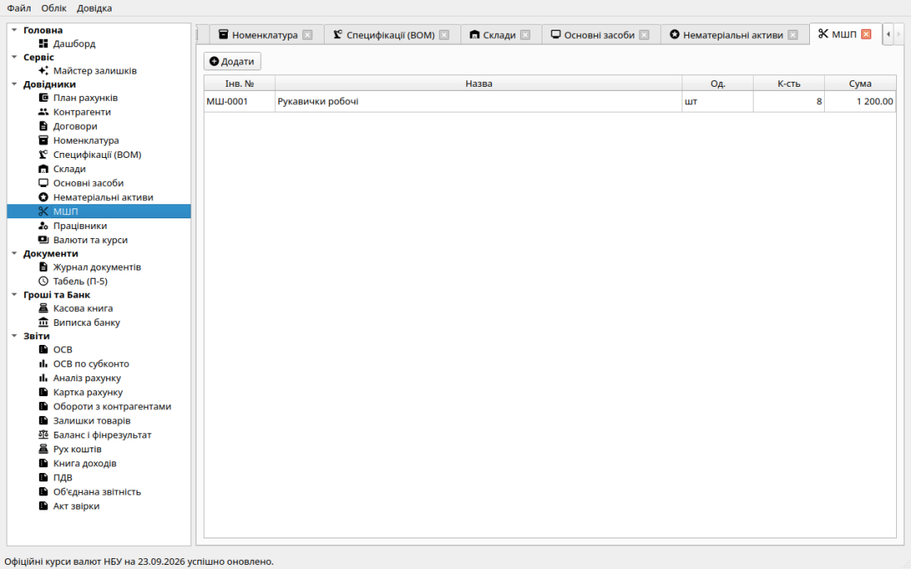
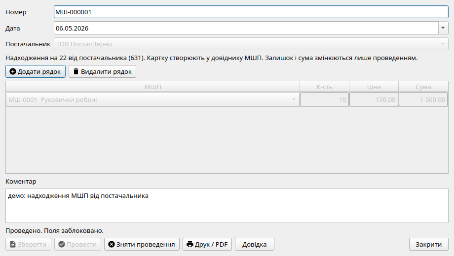
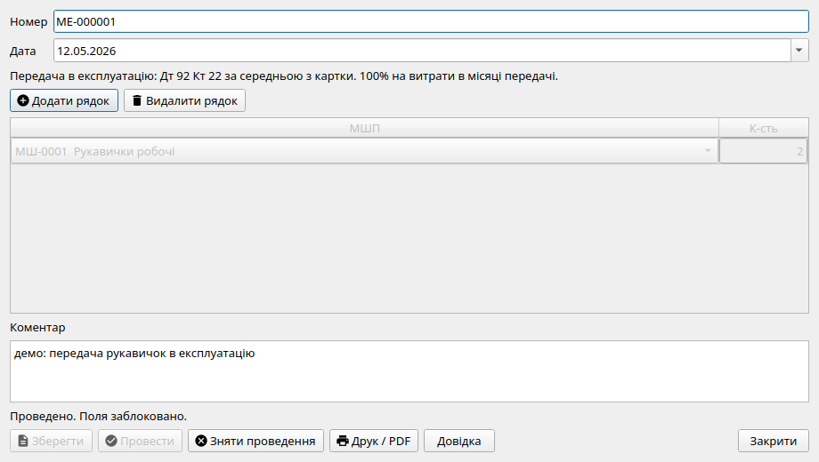

Малоцінні та швидкозношувані предмети (МШП, рахунок 22)
Для обліку предметів, що використовуються протягом не більше одного року або нормального операційного циклу (інструменти, пристрої, спецодяг, захисні засоби, офісне приладдя тощо), у системі «Фінік» призначено субрахунок 22 «Малоцінні та швидкозношувані предмети».

Розділ «МШП»: перелік карток малоцінних предметів, залишок на складі в одиницях та балансова вартість за середньозваженою оцінкою.
Чим МШП відрізняються від основних засобів?
На відміну від необоротних активів (рахунки 10 та 12), предмети на рахунку 22 не потребують багаторічного нарахування амортизації через 13 рахунок. Їхня вартість списується на витрати підприємства в момент фактичної видачі зі складу в експлуатацію.
Етапи обліку МШП
1. Оприбуткування на склад
Документ «Надходження МШП» фіксує отримання партії предметів від постачальника на баланс підприємства:
- У формі вибирається постачальник (контрагент), картка МШП із довідника, кількість та ціна придбання.
- Формується проводка: Дт 22 Кт 631.
- Якщо постачальнику раніше було перераховано аванс (дебет 371), система автоматично додає залік Дт 631 Кт 371.
- Друкована форма: Прибутковий ордер на малоцінні предмети.

Форма оприбуткування МШП на рахунок 22 від постачальника 631.
2. Передача в експлуатацію (списання на витрати)
Коли малоцінний інвентар, спецодяг чи канцелярське приладдя видаються працівникам для виконання посадових обов'язків, створюється документ «Передача МШП в експлуатацію»:
- Вибирається картка МШП, кількість предметів до видачі та працівник (або підрозділ).
- Система визначає собівартість списання за методом середньозваженої вартості та формує проводку: Дт 92 Кт 22.
- Очищення копійок: коли зі складу списується остання одиниця предмета, рушій автоматично списує залишок копійок вартості цієї картки, унеможливлюючи появу «завислих копійок при нульовій кількості».
- Друкована форма: Акт передачі малоцінних та швидкозношуваних предметів в експлуатацію.

Форма передачі МШП: списання за середньозваженою вартістю з кредиту 22 у дебет 92.
Контроль цілісності: сума залишків у реєстрі карток МШП завжди до копійки відповідає сальдо рахунку 22 в Оборотно-сальдовій відомості. Видалення картки МШП заблоковано, якщо на ній є залишок або проведені первинні документи.